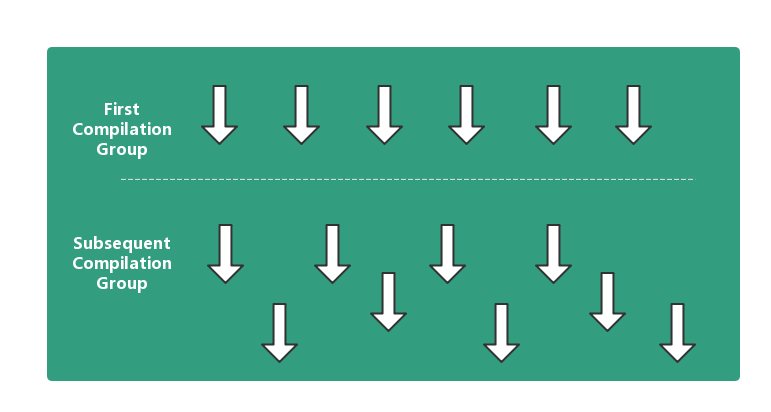
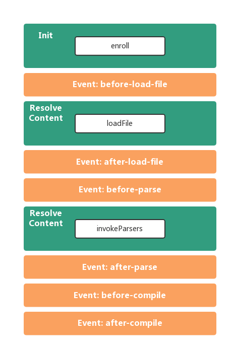

<!DOCTYPE HTML>
<html lang="" >
    <head>
        <meta charset="UTF-8">
        <meta content="text/html; charset=utf-8" http-equiv="Content-Type">
        <title>CLI如何工作 · GitBook</title>
        <meta http-equiv="X-UA-Compatible" content="IE=edge" />
        <meta name="description" content="">
        <meta name="generator" content="GitBook 3.2.3">
        <link href="https://cdn.bootcss.com/highlight.js/9.12.0/styles/github.min.css" rel="stylesheet">
        <meta name="author" content="iException">
        
        
    
    <link rel="stylesheet" href="../gitbook/style.css">

    
            
                
                <link rel="stylesheet" href="../gitbook/gitbook-plugin-highlight/website.css">
                
            
                
                <link rel="stylesheet" href="../gitbook/gitbook-plugin-search/search.css">
                
            
                
                <link rel="stylesheet" href="../gitbook/gitbook-plugin-fontsettings/website.css">
                
            
        

    

    
        
        <link rel="stylesheet" href="../styles/website.css">
        
    

        
    
    
    <meta name="HandheldFriendly" content="true"/>
    <meta name="viewport" content="width=device-width, initial-scale=1, user-scalable=no">
    <meta name="apple-mobile-web-app-capable" content="yes">
    <meta name="apple-mobile-web-app-status-bar-style" content="black">
    <link rel="apple-touch-icon-precomposed" sizes="152x152" href="../gitbook/images/apple-touch-icon-precomposed-152.png">
    <link rel="shortcut icon" href="../gitbook/images/favicon.ico" type="image/x-icon">

    
    <link rel="next" href="../library/brush.html" />
    
    
    <link rel="prev" href="../plugins/" />
    

    </head>
    <body>
        
<div class="book">
    <div class="book-summary">
        
            
<div id="book-search-input" role="search">
    <input type="text" placeholder="Type to search" />
</div>

            
                <nav role="navigation">
                


<ul class="summary">
    
    

    

    
        
        
    
        <li class="chapter " data-level="1.1" data-path="../">
            
                <a href="../">
            
                    
                    关于Anka
            
                </a>
            

            
        </li>
    

    
        
        <li class="header">开始使用</li>
        
        
    
        <li class="chapter " data-level="2.1" data-path="./">
            
                <a href="./#安装">
            
                    
                    安装CLI
            
                </a>
            

            
        </li>
    
        <li class="chapter " data-level="2.2" data-path="./">
            
                <a href="./#初始化项目">
            
                    
                    创建项目
            
                </a>
            

            
        </li>
    
        <li class="chapter " data-level="2.3" data-path="./">
            
                <a href="./#新增页面">
            
                    
                    新增页面
            
                </a>
            

            
        </li>
    
        <li class="chapter " data-level="2.4" data-path="./">
            
                <a href="./#管理组件">
            
                    
                    管理组件
            
                </a>
            

            
        </li>
    
        <li class="chapter " data-level="2.5" data-path="./">
            
                <a href="./#调试代码">
            
                    
                    调试代码
            
                </a>
            

            
        </li>
    
        <li class="chapter " data-level="2.6" data-path="./">
            
                <a href="./#生产模式">
            
                    
                    生产模式
            
                </a>
            

            
        </li>
    
        <li class="chapter " data-level="2.7" data-path="./">
            
                <a href="./#样式文件处理">
            
                    
                    PostCSS/Sass
            
                </a>
            

            
        </li>
    
        <li class="chapter " data-level="2.8" data-path="./">
            
                <a href="./#es6和es6">
            
                    
                    ES6/ES6+
            
                </a>
            

            
        </li>
    
        <li class="chapter " data-level="2.9" data-path="./">
            
                <a href="./#typescript">
            
                    
                    TypeScript
            
                </a>
            

            
        </li>
    
        <li class="chapter " data-level="2.10" data-path="configuration.html">
            
                <a href="configuration.html">
            
                    
                    配置
            
                </a>
            

            
        </li>
    
        <li class="chapter " data-level="2.11" data-path="../parsers/">
            
                <a href="../parsers/">
            
                    
                    Parser
            
                </a>
            

            
        </li>
    
        <li class="chapter " data-level="2.12" data-path="../plugins/">
            
                <a href="../plugins/">
            
                    
                    Plugins
            
                </a>
            

            
        </li>
    
        <li class="chapter " data-level="2.13" data-path="how-cli-works.html">
            
                <a href="how-cli-works.html#cli如何工作">
            
                    
                    CLI如何工作
            
                </a>
            

            
        </li>
    

    
        
        <li class="header">Canvas绘图</li>
        
        
    
        <li class="chapter " data-level="3.1" data-path="../library/brush.html">
            
                <a href="../library/brush.html">
            
                    
                    Brush
            
                </a>
            

            
        </li>
    

    
        
        <li class="header">数据打点</li>
        
        
    
        <li class="chapter " data-level="4.1" data-path="../library/tracker.html">
            
                <a href="../library/tracker.html">
            
                    
                    Tracker
            
                </a>
            

            
        </li>
    

    

    <li class="divider"></li>

    <li>
        <a href="/" target="blank" class="gitbook-link">
            Home
        </a>
    </li>
</ul>


                </nav>
            
        
    </div>

    <div class="book-body">
        
            <div class="body-inner">
                
                    

<div class="book-header" role="navigation">
    

    <!-- Title -->
    <h1>
        <i class="fa fa-circle-o-notch fa-spin"></i>
        <a href=".." >CLI如何工作</a>
    </h1>
</div>


                    <div class="page-wrapper" tabindex="-1" role="main">
                        <div class="page-inner">
                            
<div id="book-search-results">
    <div class="search-noresults">
    
                                <section class="normal markdown-section">
                                
                                <h1 id="cli&#x5982;&#x4F55;&#x5DE5;&#x4F5C;">CLI&#x5982;&#x4F55;&#x5DE5;&#x4F5C;</h1>
<p>CLI &#x7531;&#x4E3B;&#x8981;&#x7531; <code>Compiler</code>&#x3001;<code>Compilation</code>&#x3001;<code>Parser</code>&#x3001;<code>Plugin</code> &#x7EC4;&#x6210;&#xFF0C;&#x5176;&#x7684;&#x6838;&#x5FC3;&#x662F; <code>Compiler</code>, &#x7528;&#x4E8E;&#x7BA1;&#x7406;&#x5206;&#x6563;&#x5728;&#x5404;&#x5904;&#x7684; <code>Compilation</code>&#x3002;</p>
<p></p>
<p>&#x542F;&#x52A8;&#x65F6;&#xFF0C;CLI &#x4F1A;&#x83B7;&#x53D6; <code>src</code> &#x4E0B;&#x7684;&#x6240;&#x6709;&#x6587;&#x4EF6;&#xFF0C;&#x5E76;&#x4E3A;&#x6BCF;&#x4E2A;&#x6587;&#x4EF6;&#x521B;&#x5EFA;&#x552F;&#x4E00;&#x7684;&#x7F16;&#x8BD1;&#x4EFB;&#x52A1;&#xFF08;<code>Compilation</code>&#xFF09;&#x3002;&#x8FD9;&#x4E9B; <code>Compilation</code> &#x4F1A;&#x88AB;&#x653E;&#x5230; <code>First Compilation Group</code> &#x4E2D;&#xFF0C;&#x5F53;&#x6240;&#x6709;&#x4EFB;&#x52A1;&#x6267;&#x884C;&#x5B8C;&#x540E;&#xFF0C;CLI &#x5BA3;&#x5E03;&#x542F;&#x52A8;&#x6210;&#x529F;&#xFF0C;&#x5E76;&#x5F00;&#x59CB;&#x76D1;&#x542C;&#x6587;&#x4EF6;&#x53D8;&#x5316;&#xFF0C;&#x4E3A;&#x540E;&#x7EED;&#x7684;&#x6BCF;&#x6B21;&#x6587;&#x4EF6;&#x53D8;&#x66F4;&#x521B;&#x5EFA; <code>Compilation</code>&#x3002;</p>
<p><code>Compilation</code> &#x7684;&#x5DE5;&#x4F5C;&#x6D41;&#x7A0B;&#x5982;&#x4E0B;&#x56FE;:</p>
<p></p>
<p>&#x6A59;&#x8272;&#x90E8;&#x5206;&#x4F1A;&#x89E6;&#x53D1;&#x5BF9;&#x5E94;&#x7684;&#x94A9;&#x5B50;&#xFF0C;&#x5982;&#x679C;&#x6709; <code>Plugin</code> &#x5728;&#x6B64;&#x9636;&#x6BB5;&#x6CE8;&#x518C;&#x4E86;&#x76F8;&#x5E94;&#x7684;&#x4E8B;&#x4EF6;&#x5904;&#x7406;&#xFF0C;&#x90A3;&#x4E48;&#x5B83;&#x4EEC;&#x4F1A;&#x88AB;&#x987A;&#x5E8F;&#x6267;&#x884C;&#xFF0C;&#x76F4;&#x5230;&#x6240;&#x6709;&#x6CE8;&#x518C;&#x7684; <code>Plugin</code> &#x88AB;&#x8C03;&#x7528;&#x540E;&#x624D;&#x8FDB;&#x884C;&#x4E0B;&#x4E00;&#x4E2A;&#x73AF;&#x8282;&#x3002;</p>
<blockquote>
<p><code>Parser</code> &#x5DE5;&#x4F5C;&#x5728; <code>Resolve Content</code> &#x73AF;&#x8282;&#x3002;
&#x5185;&#x7F6E;&#x7684;&#x4F9D;&#x8D56;&#x5904;&#x7406;&#x63D2;&#x4EF6;&#x88AB;&#x6302;&#x5230;&#x4E86; <code>before-compile</code> &#x8282;&#x70B9;&#x3002;</p>
</blockquote>

                                
                                </section>
                            
    </div>
    <div class="search-results">
        <div class="has-results">
            
            <h1 class="search-results-title"><span class='search-results-count'></span> results matching "<span class='search-query'></span>"</h1>
            <ul class="search-results-list"></ul>
            
        </div>
        <div class="no-results">
            
            <h1 class="search-results-title">No results matching "<span class='search-query'></span>"</h1>
            
        </div>
    </div>
</div>

                        </div>
                    </div>
                
            </div>

            
                
                <a href="../plugins/" class="navigation navigation-prev " aria-label="Previous page: Plugins">
                    <i class="fa fa-angle-left"></i>
                </a>
                
                
                <a href="../library/brush.html" class="navigation navigation-next " aria-label="Next page: Brush">
                    <i class="fa fa-angle-right"></i>
                </a>
                
            
        
    </div>

    <script>
        var gitbook = gitbook || [];
        gitbook.push(function() {
            gitbook.page.hasChanged({"page":{"title":"CLI如何工作","level":"2.13","depth":1,"next":{"title":"Brush","level":"3.1","depth":1,"path":"library/brush.md","ref":"./library/brush.md","articles":[]},"previous":{"title":"Plugins","level":"2.12","depth":1,"path":"plugins/index.md","ref":"./plugins/index.md","articles":[]},"dir":"ltr"},"config":{"plugins":["-sharing","theme-oasis"],"styles":{"website":"styles/website.css"},"pluginsConfig":{"highlight":{},"search":{},"lunr":{"maxIndexSize":1000000,"ignoreSpecialCharacters":false},"fontsettings":{"theme":"white","family":"sans","size":2},"theme-oasis":{"styles":{"website":"styles/website.css","pdf":"styles/pdf.css","epub":"styles/epub.css","mobi":"styles/mobi.css","ebook":"styles/ebook.css","print":"styles/print.css"},"showLevel":false},"theme-default":{"styles":{"website":"styles/website.css","pdf":"styles/pdf.css","epub":"styles/epub.css","mobi":"styles/mobi.css","ebook":"styles/ebook.css","print":"styles/print.css"},"showLevel":false}},"theme":"default","author":"iException","pdf":{"pageNumbers":true,"fontSize":12,"fontFamily":"Arial","paperSize":"a4","chapterMark":"pagebreak","pageBreaksBefore":"/","margin":{"right":62,"left":62,"top":56,"bottom":56}},"structure":{"langs":"LANGS.md","readme":"README.md","glossary":"GLOSSARY.md","summary":"SUMMARY.md"},"variables":{},"gitbook":"*"},"file":{"path":"cli/how-cli-works.md","mtime":"2018-11-13T16:31:54.086Z","type":"markdown"},"gitbook":{"version":"3.2.3","time":"2018-11-13T17:05:46.967Z"},"basePath":"..","book":{"language":""}});
        });
    </script>
</div>

        
    <script src="../gitbook/gitbook.js"></script>
    <script src="../gitbook/theme.js"></script>
    
        
        <script src="../gitbook/gitbook-plugin-search/search-engine.js"></script>
        
    
        
        <script src="../gitbook/gitbook-plugin-search/search.js"></script>
        
    
        
        <script src="../gitbook/gitbook-plugin-lunr/lunr.min.js"></script>
        
    
        
        <script src="../gitbook/gitbook-plugin-lunr/search-lunr.js"></script>
        
    
        
        <script src="../gitbook/gitbook-plugin-fontsettings/fontsettings.js"></script>
        
    

    </body>
</html>

